山地车
围绕「选车 — 装备 — 保养 — 上路」这条线整理。写得尽量像给朋友的建议，而不是产品说明书。
这里会写什么
24 个条目，分成车型、公园与技巧三组。
车型分类
9 条
01 XC · 越野 Cross Country
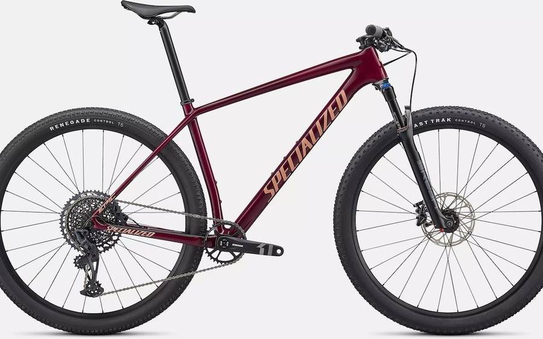
XC 是山地车最基础也最「竞技」的方向：爬坡为主，讲究效率和体能，赛道通常是起伏的土路、林道和短坡。
特征
避震行程一般在 100–120mm，车架轻、几何偏爬坡，头管角度较大（更「立」），坐姿前倾。整车重量往往是同价位里最轻的。
适合谁
想兼顾通勤、拉练和轻度越野的人；也适合作为第一台山地车 —— 轻、好骑、上手快。
代表场景
越野世界杯的 XCO 项目就是典型的 XC 赛道：短圈、高心率、反复爬坡。
短板
下坡时信心不足，遇到落差和碎石会明显吃力。想要更多下坡乐趣，就往 Trail 或 Enduro 方向选。
02 Trail · 林道 Trail

Trail 是目前最主流、也最「好用」的一类：上坡能骑、下坡不虚，是大多数人的第一台「正经」山地车。
特征
避震行程约 120–150mm，几何介于爬坡与下坡之间，头管角度约 65–67 度。整车比 XC 重一些，但下坡稳定性提升明显。
适合谁
想要一台车什么都能干的人 —— 周末进山、林道巡航、偶尔去车公园都行。
细分
Trail 内部还分短行程（约 120–130mm，更偏爬坡）和长行程（约 140–150mm，更偏下坡），按常跑的路线选。
03 DC · 下坡越野 Downcountry
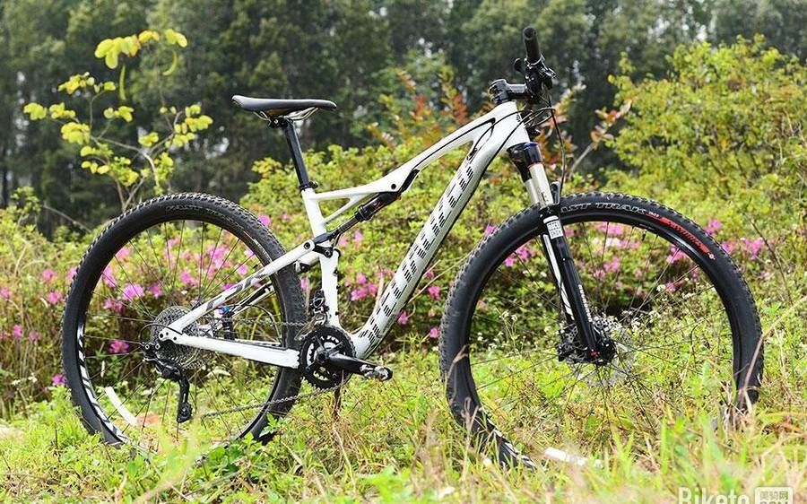
DC（Downcountry）是近几年冒出来的词：用 XC 的轻量，配上 Trail 的几何。上坡像 XC，下坡像 Trail。
特征
避震行程多在 110–130mm，但头管角度更趴、更稳，配用更宽的外胎和升降座管。整车重量接近 XC。
为什么存在
很多人发现 XC 车的下坡太紧、Trail 车又太重，于是出现了这个「折中得刚刚好」的类别。
适合谁
爬坡多、但下坡也不想怂的人；也适合把 XC 车架改造成「能打的轻装车」的玩家。
04 AM · 全山地 All Mountain
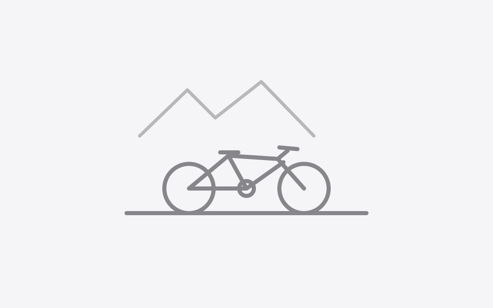
AM 是个逐渐被 Trail / Enduro 吞并的词，指「整座山都能骑」——上得去、下得来，不偏向任何一端。
特征
避震行程约 140–160mm，几何偏下坡，但保留了可接受的踩踏效率。
现在怎么选
今天多数厂商不再单列 AM，而是把它并进长行程 Trail 或短行程 Enduro。买的时候按行程和几何判断，比看名字靠谱。
05 Enduro · 耐力 Enduro
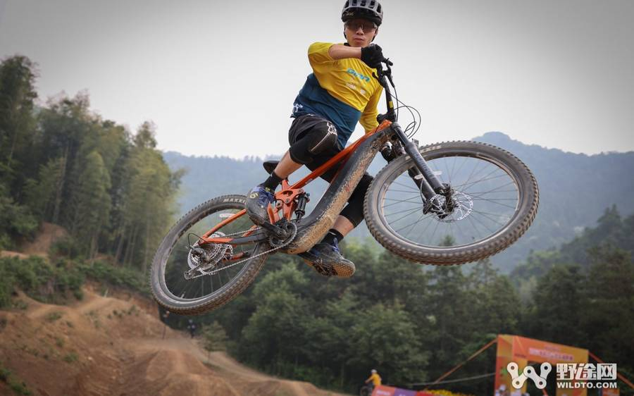
Enduro 是「要自己骑上去的速降」。比赛形式是分段计时：爬坡路段不计时，下坡赛段全力冲。
特征
避震行程约 160–180mm，几何明显偏下坡，头管角度约 63–65 度，车重上升但下坡能力接近速降车。
适合谁
想在自然山道上放速下坡、又不想扛着车走的人。目前是业余玩家最热门的方向之一。
代价
爬坡会比 Trail 车累不少，长距离骑行对体能要求更高。
06 DH · 速降 Downhill
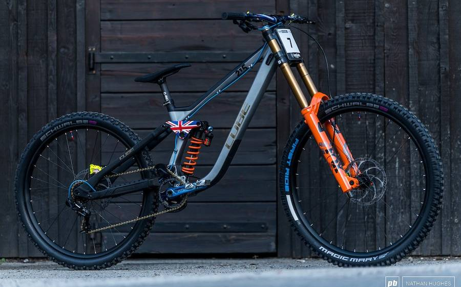
DH 只做一件事：用最快的速度冲下坡。赛道多为陡坡、乱石、大落差和大跳台。
特征
避震行程约 200mm，双肩前叉、重型车架、粗胎、大碟刹。整车常超过 16kg，基本不具备爬坡能力。
怎么骑
靠缆车、摆渡车或推车上山，只骑下坡。需要全套护具 —— 全盔、护胸、护膝护肘，几乎是必需品。
代表赛事
速降世界杯（DH World Cup）是这个方向的最高舞台，赛道通常修在陡峭的山体上。
07 FR · 自由骑 Freeride
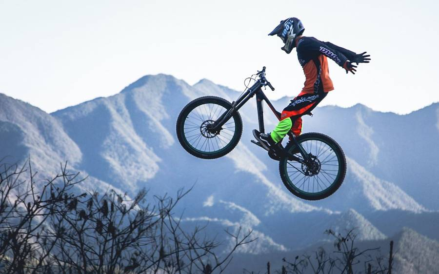
FR 不追求最快，追求「怎么飞得好看」。大跳台、悬崖落差、空中动作，是自由骑的日常。
特征
车与 DH 接近但更强调强度与稳定性，几何允许更大幅度的动态动作，很多车用单速或小范围变速。
场地
常见于车公园的跳台线、土坡场地和专门修建的落差赛段。
门槛
是所有方向里对技术要求最高的之一：动作失误的代价很直接，护具和循序渐进缺一不可。
08 DJ · 土坡 Dirt Jump
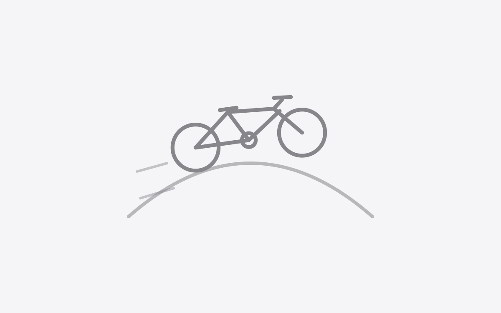
DJ 用的是接近硬架的小车，在连续的土坡之间起跳、做动作。核心是节奏、控车和空中姿态。
特征
车架小巧、坐垫极低、多为硬架或短行程，轮胎偏小、胎压偏高，方便起跳和落地。
场地
土坡场地、泵道（pump track）和车公园的跳台区。
和 BMX 的区别
DJ 用的是山地车规格的轮组和避震前叉，能承受更大的落地冲击，也更适合户外土坡。
09 Trials · 攀爬 Trials
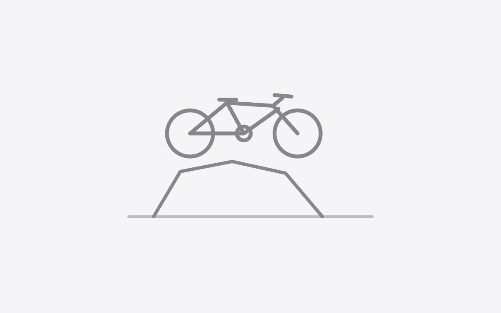
攀爬车没有坐垫、齿比极轻，目标是用最慢的速度越过障碍物，比的是平衡与控制。
特征
车架极小、无坐垫或只有装饰性坐垫，齿比很轻，刹车极强，胎压极低以增加抓地。
玩法
在岩石、木箱、台阶上做定点平衡和跳跃，是「低速高难」的技术流。
对实战有没有用
有 —— 练过攀爬的人，在山道上的低速控车和定点能力通常会明显更好。
国内山地车公园
9 条
10 极峰山地车公园 安徽 · 马鞍山
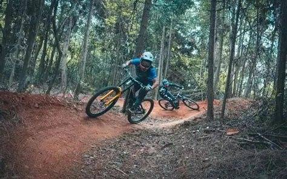
极峰山地车公园位于安徽省马鞍山市博望区丹阳镇丹东村，2023 年建成开放，由筑路师丁再刚设计修建，是苏皖地区少见的专业山地车公园。
基本信息
园区共有 7 条专业赛道，按难度分级，从入门到进阶都有覆盖。地处苏皖交界，从南京方向经常合高速「横溪」出口下高速后按导航即可到达。
为什么值得跑一趟
华东地区能修出成体系赛道的场地并不多，极峰填补了苏皖一带的空白，也带动了当地的骑行氛围。
出发前
门票、开放时间与赛道维护情况会随季节调整，出发前建议先在其官方账号确认当天是否开放。
本条信息整理自公开报道，具体开放安排请以园区官方发布为准。
11 崇礼 · 张家口 河北
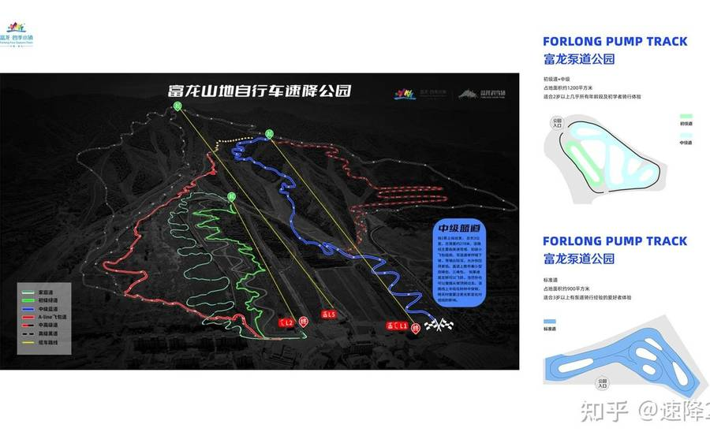
崇礼是华北地区最有名的山地度假区之一，依托雪场的山地资源，夏季转为山地车公园运营，有成熟的缆车与赛道体系。
为什么适合骑车
海拔较高、夏季凉爽，缆车可以带车上山，省掉大量爬升，非常适合练下坡和速降。
玩法
以车公园式的下坡赛道为主，难度分层，既能新手体验，也能满足进阶玩家。
交通
距北京约 3 小时车程，高铁到崇礼站后转接驳也方便。
各雪场的夏季运营方案逐年调整，出行前请确认当年是否开放骑行项目。
12 莫干山 · 湖州 浙江
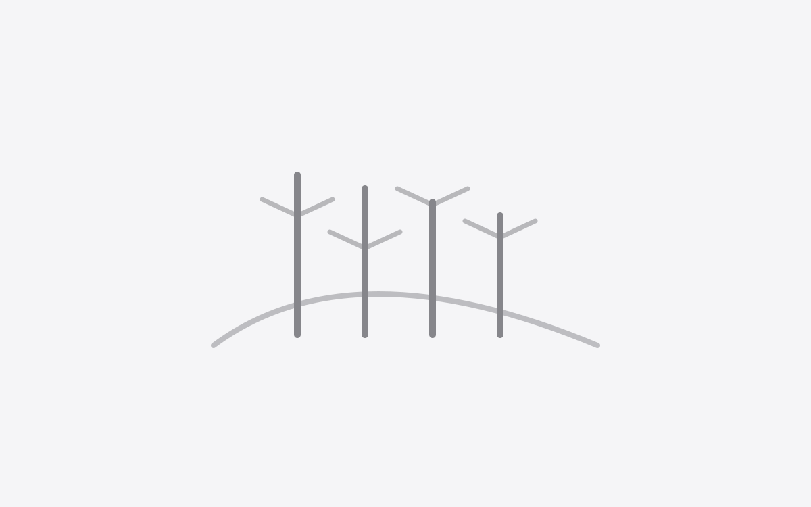
莫干山一带竹林密布、坡度多变，是江浙沪骑行圈常去的目的地。周边发展出多条成熟的林道与骑行路线。
路况特点
以竹林土路和林道为主，起伏密集、弯多，考验控车与体能，和下坡公园的玩法不太一样。
配套
莫干山周边民宿与骑行服务完善，适合安排两天的周末骑行。
注意
部分林道属于村民生产道路或受保护区域，请勿在禁行区域骑行，并遵守当地规定。
13 北京 · 香山一带 北京
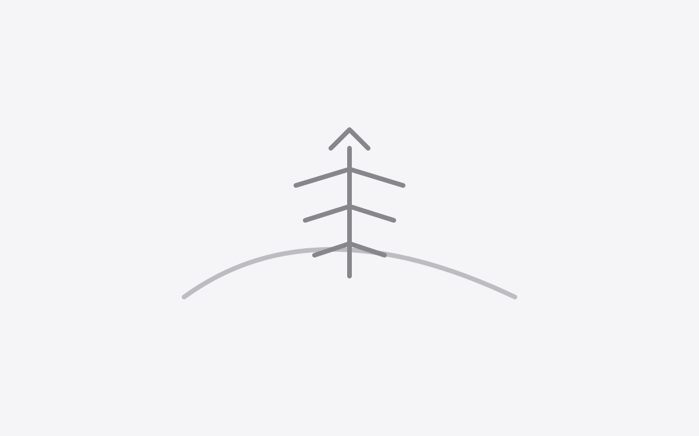
北京的山地车氛围集中在西郊的香山、模式口、凤凰岭一带，多年来形成了不少民间林道。
特点
以自然山道和手工修整的林道为主，路线多样，从缓坡到技术路段都有。
注意
部分区域属于景区或受保护山地，骑行前请确认是否允许进入，避免与徒步游客及管理者冲突。
室内补充
北京周边也有室内泵道与土坡场地，适合冬天或雨天练习基本功。
14 成都 · 龙泉山 四川
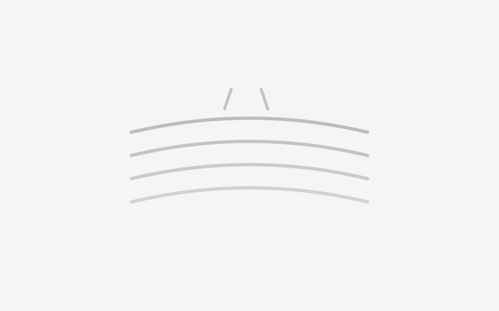
成都周边以龙泉山为代表的丘陵地形，是西南地区骑行热度很高的区域，公路与山地玩法都很活跃。
特点
坡长适中、起伏连续，适合拉练和技巧练习；周边也有专门修建的越野与土坡场地。
氛围
成都骑行群体规模大，周末的山道上总能遇到同好，也便于结伴出行。
注意
热门路段人车混行情况较多，下坡时务必控速、留出安全距离。
15 大理 · 苍山 云南
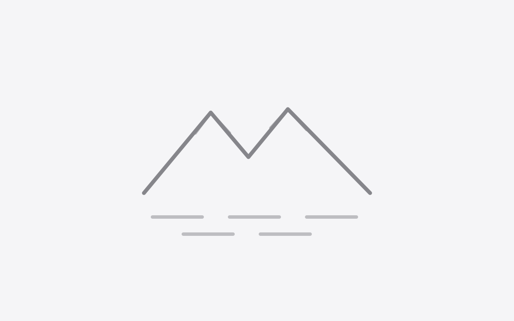
大理是很多人心中的骑行目的地：海拔适中、气候温和，苍山脚下的土路与林道资源丰富。
特点
海拔落差明显，路线从环湖公路到山中土路都有，风景是最大的加分项。
注意
高海拔地区的天气变化快，紫外线强，长距离骑行要带足补给和保暖衣物。
适合
适合把骑行和旅行结合起来的玩法，慢节奏、多停留。
16 安吉 · 湖州 浙江
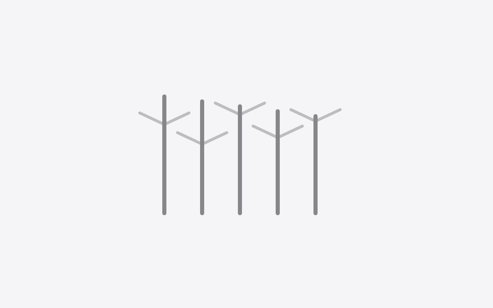
安吉竹林与丘陵资源丰富，是长三角地区骑行活动频繁的县区，也有成规模的骑行基地与赛事。
特点
地形以丘陵为主，坡度平缓、路网密集，适合新手入门和长距离骑行。
配套
当地文旅配套成熟，骑行驿站、租车和住宿都比较方便。
17 深圳 · 光明及周边 广东
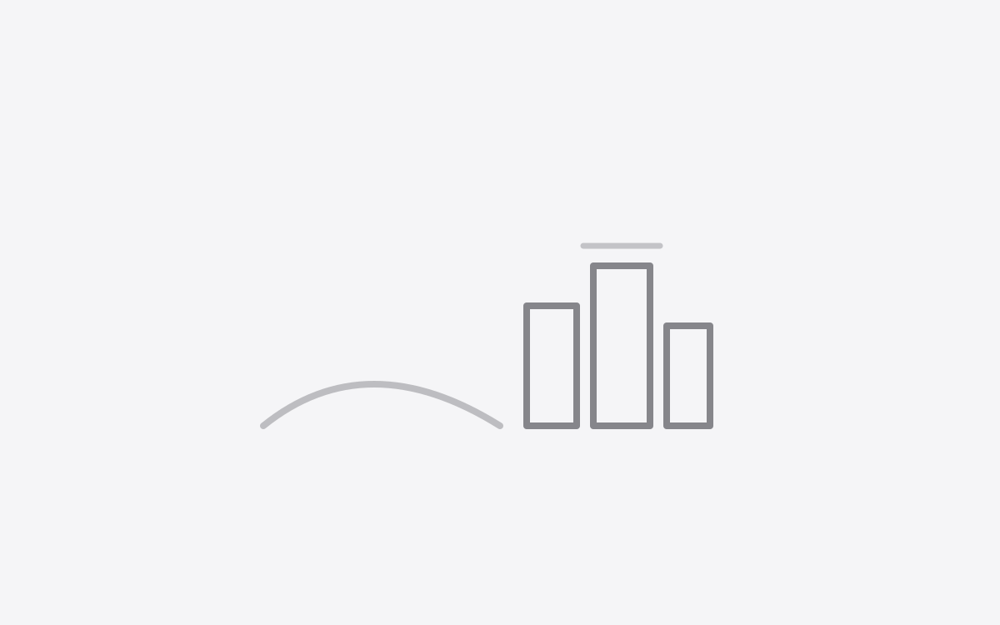
珠三角的骑行人口基数大，深圳及周边的山体与郊野公园中也发展出不少林道和练习场地。
特点
以短途林道和技巧练习场为主，周末半天就能跑一趟，适合上班族保持状态。
注意
南方湿热、雨季长，山路湿滑时抓地力下降明显，雨后两天内不建议猛骑下坡。
18 泉林大河 · 中山 广东 · 中山
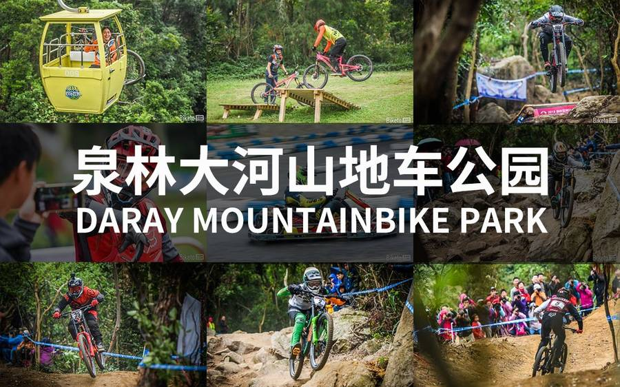
泉林大河山地车公园位于广东省中山市三乡镇泉林欢乐世界园区内，是华南地区少有的、配备缆车的全季型山地车公园，占地约 800 亩，山体落差约 280 米。
位置与交通
地址在中山市三乡镇泉林欢乐世界内，靠近金龙路，紧邻广珠西线三乡出口。广州、深圳自驾约 1 小时，中山市区与珠海约 40 分钟。
赛道
园区有多条赛道，按难度分了蓝道与黑道，另设沥青 Pumptrack 场地，从入门到高级都有对应选择。其中黑线赛道全长约 1.7 公里，落差 280 米，包含落差跳台、弯墙、乱石等高难度元素，面向高级骑手。
设施与服务
- 缆车：华南地区唯一配备缆车的山地车公园，省掉推车上山的力气
- 服务中心，提供自行车租赁与维修、护具租赁
- 园区内有酒店（大河 SPORT 酒店）与餐饮
- 除山地车外还有卡丁车、ATV 越野车、水上漂流等项目
开放与票价
- 全年开放，四季皆可骑
- 缆车：单次 50 元 / 三次 120 元 / 全日无限次 268 元
- Mini Bike Park 入场票：7 岁以上 50 元两小时，器材租赁另计
赛事与培训
园区承办过 GDL 速降联赛等赛事，也提供儿童与青少年的骑行培训课程，适合带小孩一起玩。
出发前
票价、开放时间与赛道维护情况会随季节和园区安排调整，出发前建议先在园区官方渠道确认当天缆车是否运营、是否需要预约。
本条信息整理自公开资料（美骑网 / 携程 / 知乎 / 大众点评等），票价与开放安排可能变动，请以园区官方发布为准。
知识与技巧
6 条
19 关键部件 Parts
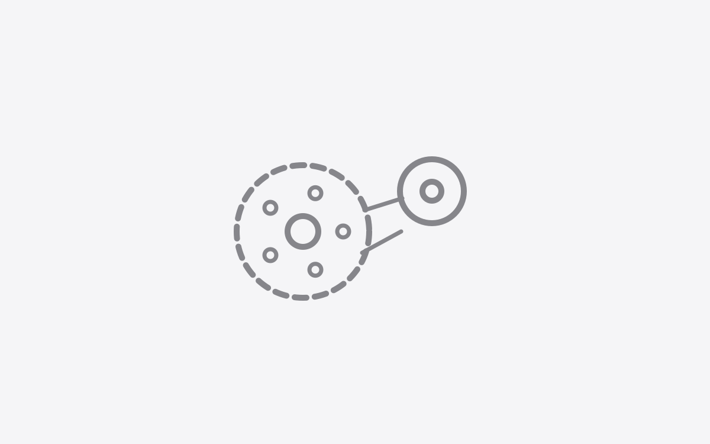
看懂几个核心部件，比记住一堆品牌型号更有用。
车架与几何
车架是整车的骨架。真正影响骑乘感受的是几何参数：头管角度（越小越稳、越适合下坡）、后下叉长度、以及跨高。尺寸买错，再贵的配置也救不回来。
前叉与后胆
行程决定能承受多大的冲击。前叉除了行程，还要看阻尼结构和可调范围 —— 便宜的叉往往只有弹簧和回弹，贵的叉能调压缩阻尼。
传动
现在是 1x 单盘的天下，前面一个牙盘、后面一整排飞轮。看的是齿比范围和变速平顺度，链条张力对下坡稳定性影响很大。
刹车
碟刹是标配。来令片材质（树脂 / 金属）影响手感和耐磨，碟片尺寸影响散热。长时间下坡时的热衰减，多半是碟片和来令片的问题。
轮组与轮胎
轮径 27.5 灵活、29 通过性好。轮胎的胎面花纹、宽度和胎压，是性价比最高的「性能改装」—— 同一台车换条胎，手感可以完全不同。
20 装备清单 Gear
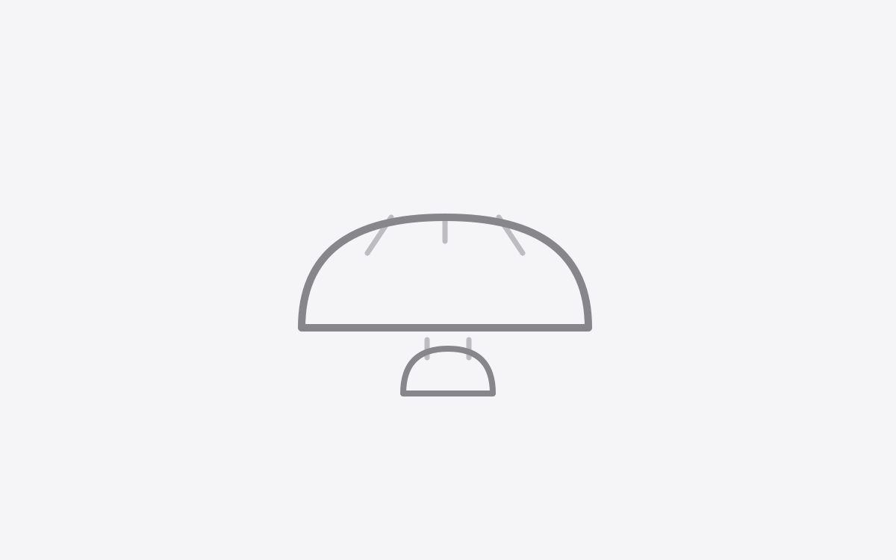
装备的意义是「出事的时候能兜住」。顺序上，先护具后性能。
必买
- 头盔：第一优先级。速降/自由骑建议全盔，林道可用带后脑保护的半盔。
- 手套：摔车时本能撑地，手套是最直接的保障。
- 护膝（进阶加护肘）：山地骑行膝盖受伤概率很高。
强烈建议
骑行裤（减少长时间骑行的不适）、护目镜（挡树枝和飞虫）、以及一双能踩稳脚踏的鞋。
随身工具
便携气筒、胶条或补胎片、内胎、快拆链条扣、多功能工具。有这些，大多数小故障能现场处理掉。
补给
按每小时约一升水估算，长距离再补盐分和能量胶。夏天要把量算足，脱水会直接导致判断力下降。
21 保养与维护 Care
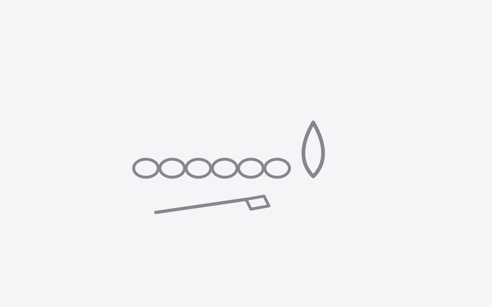
花十分钟保养，能换回一整个月的顺畅。山地车的损耗速度远高于公路车，日常维护是刚需。
链条
最容易被忽视、也最影响手感的部件。每次湿骑后擦干上油，能明显减少传动损耗。链条拉伸超过限度就该换，否则会把飞轮一起磨废。
刹车
看两件事：来令片厚度是否还够、碟片有没有沾油。沾油的碟片会发出异响且制动力骤降，需要清洁或更换。
避震
按厂商建议做周期保养（换油、换密封件）。气压按体重和路况调，每次骑前快速检查一下回弹。
胎压
别照抄胎壁上的上限值。按体重和路况往下调一点，抓地力会好很多 —— 这是零成本提升操控的办法。
骑前检查
快拆/桶轴是否锁紧、刹车是否正常、胎压是否合适、头盔有无损伤。三十秒，能避开很多麻烦。
22 技巧与姿态 Skills
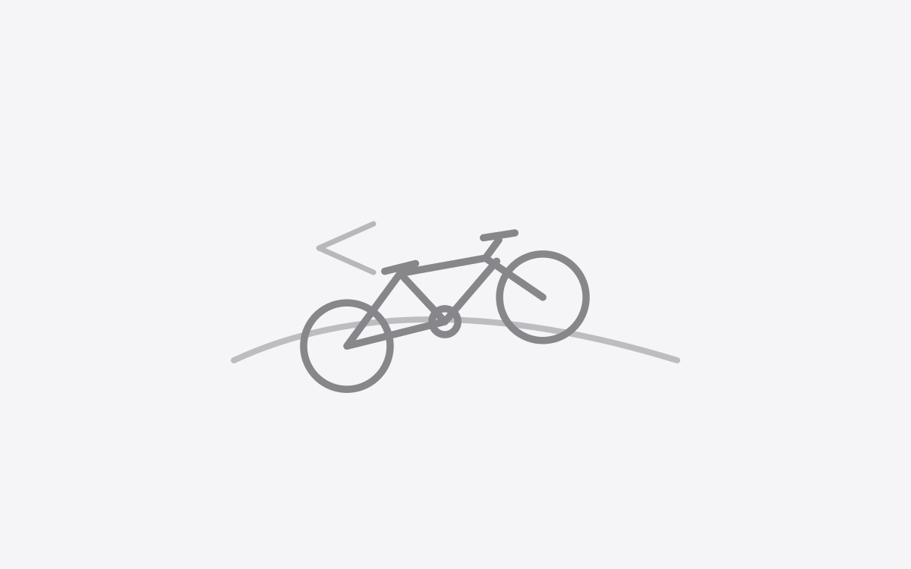
下坡时的姿势，比你骑了多久更重要。
基本站姿
下坡时重心压低、髋部后移、手臂微屈别锁死。身体要能随地形前后移动 —— 这就是所谓的「动态平衡」。
过弯
入弯前把速度降够，弯中尽量少捏刹车。外侧脚踩实、身体压向弯内，视线看向弯的出口而不是前轮。
刹车
刹车点尽量选在直道上，前后刹配合使用。湿滑路面时后刹比重可以大一些，避免前轮抱死。
爬坡
保持踏频，别用大盘硬踩。重心略微前移压住前轮，避免在陡坡上翘头。
跳跃
从最小的落差开始。起跳前保持稳定速度，靠推把而不是拉把完成起跳，落地时用身体吸收冲击。
23 体能与训练 Fitness
骑行的强度大半由心肺决定，而恢复和训练同样重要。
有氧基础
大部分里程应该放在能正常说话的低强度骑行上。基础打牢，高强度训练才有意义。
间歇
每周 1–2 次间歇练习可以提升有氧上限：短时间高强度 + 充分恢复，重复若干组。
力量
下肢力量训练（深蹲、箭步蹲）能提升踩踏效率，也保护膝盖。核心力量对上身的稳定尤其重要。
恢复
睡眠不足还连着猛练，进步反而更慢。训练日的间隔、拉伸和睡眠，是同等重要的组成部分。
心态
骑得久，比骑得猛更重要。山地车是长期爱好，能持续出门才是一切的前提。
24 路上故障处理 Field Fix
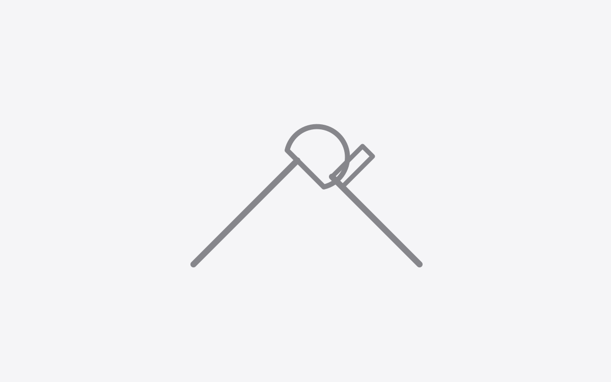
在人烟稀少的林道中间，能不能自己把车弄回去，决定了你今天的心情。
掉链
多半是链条松或后拨限位不对。装回去后顺手检查后拨限位螺丝，能避免再次发生。
爆胎 / 扎胎
带内胎就直接换，带补胎片就现场补。真空胎可以插胶条应急。先把异物从外胎里挑出来再处理，否则补了还会漏。
刹车异响
通常是有油污或来令片磨完了。前者清洁碟片和来令片，后者只能换片。
变速不准
多半是线管老化或后拨需要微调。用后拨上的微调旋钮边骑边调，通常能撑到回家。
断链条
带上快拆链条扣就能现场接回去。接好后避免大齿比硬踩，回家再换新链条。
这些都不是大故障，但不会处理就得推车回家。出发前花两分钟检查工具是否带齐，比什么都实在。
一点说明
这里写的是自己骑车踩出来的经验，不追参数、不报价格。路况和体重因人而异，任何设置都建议先小范围试，觉得不对就调回去。